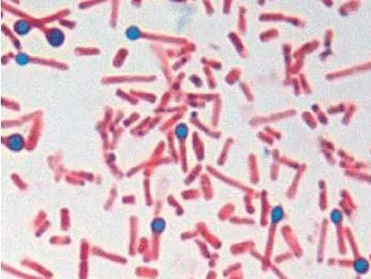

Follow the clues, try the activities, and see how each discovery connects to the next.
01 / MEET THE MICROBETHE BASICS
Tiny bacterium. Powerful toxin.
Tetanus is an infection caused by a bacterium called Clostridium tetani. The trouble starts with the toxin it makes.
DISCOVERY 01 / MEET THE THREE FORMS
Same story. Three different roles.
EXPLORE
Explore the bacterium and its spores in this micrograph, then discover how its toxin has a different role. Which one carries the effects away from the wound?

Toxin is not visible in this micrograph.
Clostridium tetani · micrograph supplied by the project group. Open full-size image.
THE BACTERIUM
A tiny living cell
Clostridium tetani can grow in a low-oxygen wound and make toxin. Select all three specimens to compare their jobs.
Look for pink, rod-shaped bacterial cells. The outlines guide your observation; the photograph is unchanged.
Inspect all three to collect the specimen notes.
01
It lives around us.
Its tough, resting forms, called spores, can be found in soil, dust, and manure.
02
It makes a toxin.
A toxin is a poison. This one affects nerve signals that help muscles relax.
03
It can cause lockjaw.
Jaw muscles can tighten so much that opening the mouth becomes difficult.
WORTH KNOWING
You can’t catch tetanus from another person.
Go deeper: are all cases the same?+
There are four forms. The names describe where or in whom the illness occurs.
Generalized
The most common form. Stiffness and spasms affect the body, often starting in the jaw and neck.
Localized
Spasms happen near the wound. This uncommon form can develop into generalized tetanus.
Cephalic
A rare form affecting nerves in the head, often after a head injury. It can affect facial muscles.
Neonatal
Affects babies in their first 28 days. Bacteria can enter the umbilical cord stump. Risk is higher when the mother is not protected by vaccination.
A RESTING FORM, A LIVING CELL, A TOXIN
We’ve met the three players. But how could they get past our skin in the first place? Let’s zoom in on a wound.
Skin Wound Inflammation · Drew Berry / WEHI.TV, 2014. This is a general wound-inflammation animation, not a tetanus-specific animation.
DISCOVERY 02 / MAKE AN OBSERVATION
Watch like a scientist.
EXPLORE
Notice one change in the damaged area. How could a break in the skin connect to the tetanus story?
THE SCIENCE CONNECTION
Broken skin can be a doorway.
Damage to the skin can give environmental spores a way into the body. The animation shows general inflammation; it does not show tetanus toxin travelling through nerves.
Compare this with your own idea. You can edit your note and revisit the comparison.
Connect the animation to tetanus+
A wound can give spores a way into the body. If conditions allow tetanus bacteria to grow, they can make toxin. The animation illustrates a general response to injury; it does not show tetanus toxin travelling through nerves.
A simplified pathway using OpenStax textbook illustrations and a still from the supplied 2014 animation. Select a stop to read its image credit. The anatomy drawings show general structures, not tetanus-specific scenes.
USUAL SIGNALS
Move. Then relax.
Nerve signals help muscles tighten and relax.
MOVERELAX
WITH TETANUS TOXIN
The brake is blocked.
Without the “relax” message, muscles can stay tight or spasm.
MOVERELAX ×
Go deeper: which tissues are affected?+
Nervous tissue
The toxin’s main target. It disrupts signals that help muscles relax.
Muscle tissue
Muscles respond to the disrupted signals. Facial muscles, other skeletal muscles, and breathing muscles can be affected.
Damaged tissue
Low-oxygen areas in a wound can let C. tetani grow and make toxin.
Science words, decoded+
Tetanospasmin
The scientific name for tetanus toxin.
Motor neuron
A nerve cell that helps tell muscles to move. The toxin enters the endings of these cells.
Anaerobic
Without oxygen. Tetanus bacteria grow in low-oxygen conditions.
FROM CHANGED SIGNALS TO CHANGED MUSCLES
The toxin can interrupt nerve “brakes.” Before connecting that to symptoms, put the “my immune system is built differently” claim under the microscope.
A student was running for the bus and accidentally got a puncture wound from something that could have been contaminated with soil. His friend tells him to clean the wound and let a trusted adult know but he says "it's just a small cut, it's fine."
A student falls while playing soccer outside and gets a puncture wound from a dirty object. His friend tells him to clean the wound and tell an adult, but he responds, "Relax, my immune system is built differently. Nothing can happen to me."
A student accidentally gets a dirty wound while playing outside. His friend tells him to clean it and check his vaccination status. He says, "Nah, vaccines are unnecessary. I'm good."
Which statement about tetanus vaccination is correct?
Meme images supplied by the project group. These are fictional learning scenarios. For a real wound, involve a trusted adult and get appropriate healthcare advice.
04 / SPOT THE SIGNSTHE BODY’S RESPONSE
When muscles can’t get the “relax” message.
We’ve seen how toxin disrupts nerve braking. The result can be painful stiffness and muscle spasms: tightenings a person does not choose to make.
DISCOVERY 04 / CONNECT THE SYMPTOMS
Follow a nerve problem to a muscle effect.
EXPLORE
Select the numbered spots to explore three muscle areas. The common link is disrupted nerve control.
Simplified illustration
01 / JAW
A tight jaw
Opening the mouth may become difficult. That’s why tetanus is called “lockjaw.”
Connect it to the nerve: disrupted control can keep jaw muscles tight even when the wound is elsewhere.
02 / NECK & THROAT
Swallowing gets hard
Stiff muscles can make swallowing difficult.
Connect it to the nerve: the toxin changes signals controlling muscles; it does not need to be in the throat itself.
03 / MUSCLES
Stiffness & spasms
Painful spasms can happen in the abdomen and other muscles.
Connect it to the nerve: without normal braking, muscles can receive excessive activating signals.
Explore the jaw, neck and throat, and abdomen.
3–21 days
Symptoms usually begin in this range after exposure, often around 8 days. Timing varies.
Go deeper: other signs & possible complications+
Other signs can include
Headache, fever, sweating, seizures (jerking or staring), and changes in blood pressure or heart rate.
When the illness becomes severe
Breathing difficulties: breathing muscles or vocal cords can tighten. Tightening of the vocal cords is called laryngospasm.
Broken bones: very strong spasms can cause fractures.
Lung problems: complications can include a blood clot blocking a lung blood vessel (pulmonary embolism), or infection after saliva or vomit enters the lungs (aspiration pneumonia).
Tetanus is a medical emergency. Trouble breathing or swallowing with suspected tetanus needs urgent medical care.
FROM SYMPTOMS TO A PATIENT’S STORY
You’ve explored how nerves and muscles connect. Now listen for those clues in a conversation between a doctor and a patient.
A wound tells us how spores could get in. Symptoms tell us how the body is affected. Bring those two ideas together in this doctor–patient conversation.
YOUR LISTENING MISSION
Trace the entry. Listen for an injury or contact with soil or dirt.
Map the effects. Which parts of the body are affected?
Connect the clues. Which form of tetanus fits the pattern?
Tetanus can be life-threatening. With hospital treatment, people can recover—but it can take months.
01
Get medical care
Tetanus needs treatment in hospital. Getting care quickly matters.
02
Give the body time
Spasms can last for weeks. Full recovery may take several months.
03
Keep protection up to date
Having tetanus doesn’t give lasting immunity. Vaccination is still important after recovery.
THE BIG TAKEAWAY
Vaccination helps prevent tetanus before it starts.
Go deeper: what affects recovery?+
Prognosis means the likely course of an illness and the chances of recovery.
It depends on age, how severe the illness is, and how quickly treatment starts. A shorter time between the wound and symptoms can be a sign of more severe illness.
FROM RECOVERY TO PREVENTION
Recovering from tetanus takes time and doesn’t reliably protect someone from getting it again. How can the immune system prepare before the toxin has a chance to act?
A conversation starter from the project group · 14 seconds · sound available.
WATCH, THEN CONNECT THE SCIENCE
Protection starts before the problem.
Watch the group’s clip, then explore how vaccination prepares the immune system to respond to tetanus toxin.
WHAT’S IN THE VACCINE?
A toxoid: an inactivated toxin.
It helps the immune system learn to recognize the toxin. The toxoid cannot cause tetanus.
Keep this question in mind: how can learning about a harmless version of a toxin help protect against the real one?
DISCOVERY 05 / EXPLORE IMMUNE MEMORY
Practice. Remember. Refresh.
EXPLORE
Explore each stage to connect vaccination, immune memory, and boosters. These are learning stages, not a personal vaccination schedule.
01
Meet the toxoid
The vaccine introduces an inactivated form of the toxin.
02
Build protection
Antibodies and immune memory develop after vaccination.
03
Refresh the response
Booster doses help maintain protective immunity over time.
STAGE 01 / PRACTICE
A safe introduction to the toxin.
The toxoid acts as a practice target. It prompts an immune response without the harmful action of active tetanus toxin.
Explore all three stages to collect the immune-memory note.
THE TARGET IS THE TOXIN
Antibodies can intercept it.
Protective antibodies can neutralize toxin before it binds to nerve tissue. Vaccination prepares protection; it does not undo toxin already acting inside nerves.
KEEP PROTECTION CURRENT
Boosters matter.
Protection can decrease over time. Recommended booster doses remind the immune system and help maintain protection.
AFTER RECOVERY, TOO
Having tetanus does not reliably provide immunity. Vaccination is still important after recovery.
Why does my own vaccination matter?+
Tetanus does not spread from person to person. Its spores come from the environment, so other people being vaccinated does not replace your own protection.
Tetanus protection often comes in combination vaccines, with names such as DTaP, Tdap, or Td. A healthcare professional or public health unit can explain which doses are appropriate for someone’s age and vaccination history.
PUT THE WHOLE STORY TOGETHER
You’ve seen how vaccination prepares protection against the toxin. Check one last confident claim before using the whole story in the Locked Jaw case.
Science-break memes: three images supplied by the project group; original creators and reuse licences were not provided. The files are kept unchanged, with source records in the meme asset notes.
Vaccination conversation: video supplied by the project group. The original MOV is preserved in the uploaded attachments; a web-compatible MP4 is used on the website.
Animations show general biology. Skin, neuron and synapse images in topics 2 and 3 are sourced OpenStax textbook illustrations. The wound image is a still from the supplied Drew Berry / WEHI.TV animation. The first topic uses the micrograph supplied by the project group. Other existing interactive drawings outside these three topics remain unchanged.
Original JPGs reproduced without alteration under CC BY-NC-SA 4.0. Images are displayed at responsive sizes; no AI image generation was used for these replacements.
Source records
The first topic’s C. tetani micrograph was supplied by the project group from this source page. Its original photographer and licence were not supplied; it is separate from the OpenStax images.
The downloadable originals and their labels are preserved. The image manifest records each source file, source revision, licence and checksum. A copy of the licence is included.
Wound still: Skin Wound Inflammation, Drew Berry / WEHI.TV, 2014, extracted from the video supplied for this project. It illustrates general inflammation.